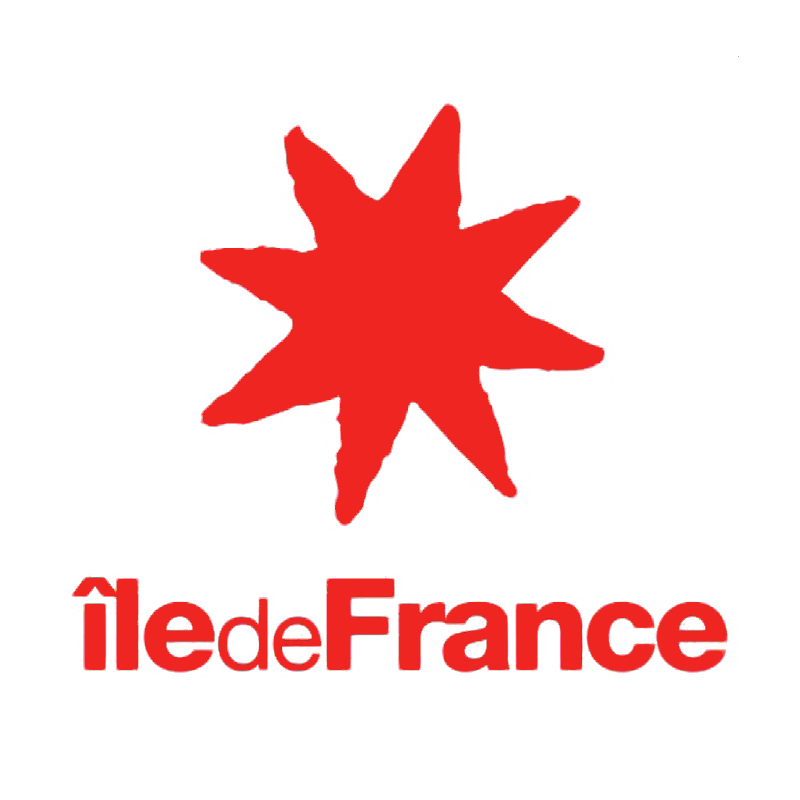
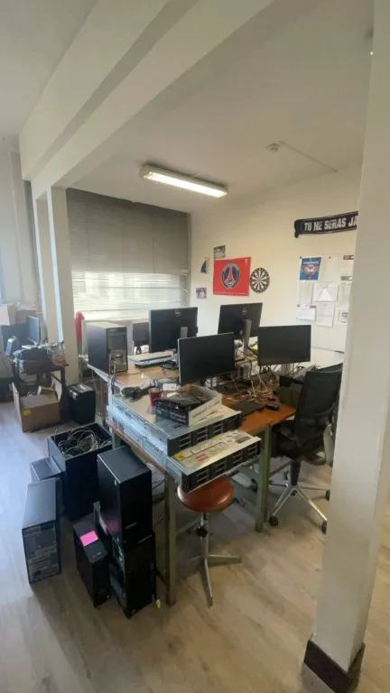
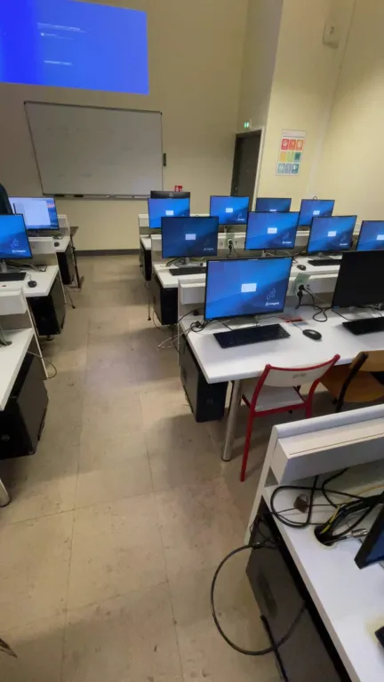
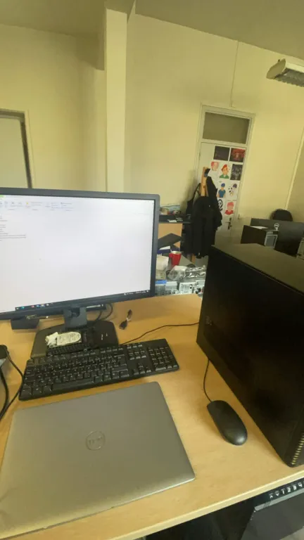
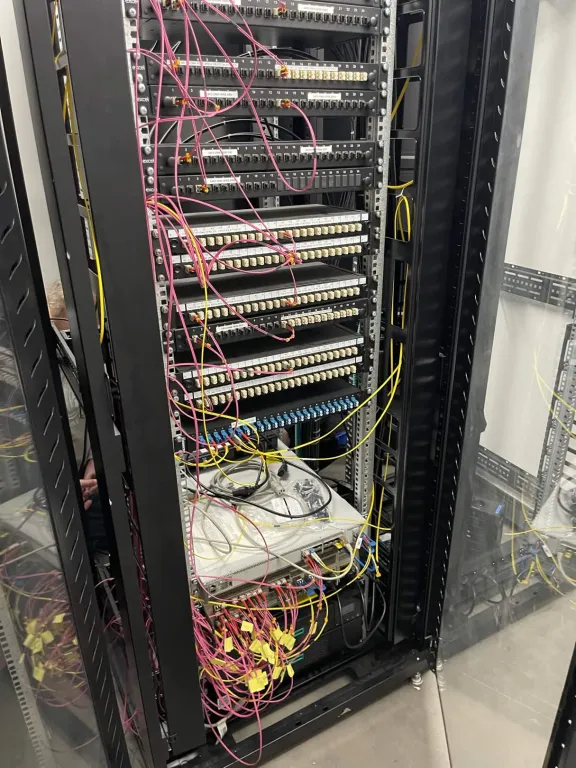
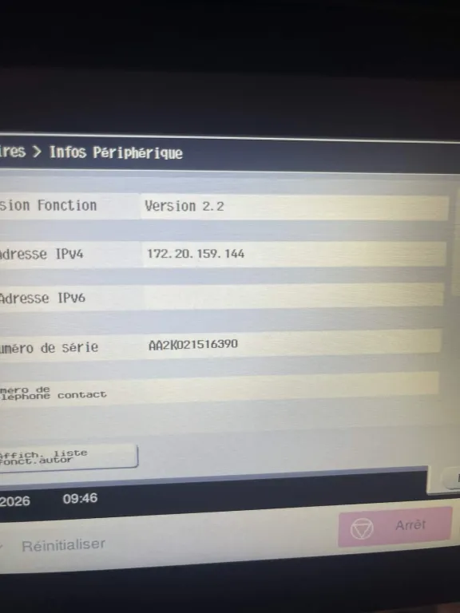

Objectif
Mettre en avant des réalisations concrètes : support, infra, réseau, sécurité et documentation.
Étudiant en BTS SIO (SISR) — systèmes, réseaux, support & cybersécurité
Mettre en avant des réalisations concrètes : support, infra, réseau, sécurité et documentation.
Déploiement de postes, dépannage, configuration réseau (VLAN, NAT…), virtualisation, sécurité.
Stages + projets + TP téléchargeables pour appuyer les compétences demandées en BTS.
Stage n°1 à la Région Île-de-France (pôle Transformation Numérique), à Saint-Ouen, du 26 mai au 27 juin 2025.
Cette période de stage m’a permis de découvrir plus concrètement le fonctionnement d’un environnement informatique dans une grande administration publique, avec une approche à la fois organisationnelle, technique et documentaire. J’ai pu observer la manière dont les outils numériques sont suivis, structurés et intégrés dans les projets internes.
Ce stage m’a surtout permis de mieux comprendre la place du numérique dans une organisation publique : sécurité des données, méthodes de travail, importance de la documentation et coordination entre les équipes.

Stage n°2 du 12 janvier au 20 février 2026 :
support informatique de proximité (déploiement, salles informatiques, réseau, maintenance, examens).
Résumé mis à jour avec mes derniers jours (jusqu’au Jour 21).





Documents téléchargeables + réalisations pédagogiques.
Support, systèmes, réseaux, sécurité, déploiement et documentation.
Diagnostic, résolution, assistance utilisateurs
Windows & Linux, maintenance, déploiement
Routeurs, switches, VLAN, adressage IP
Bonnes pratiques, sensibilisation, éthique
VMware Workstation, VirtualBox
Installation logiciels via scripts, préparation de postes
Documentation technique, suivi de demandes (ITSM)
HTML, CSS (notions)
Formations et apprentissages personnels (complément du BTS SIO SISR).
Approfondissement : comptes, GPO, bonnes pratiques, dépannage et administration.
Adressage IP, VLAN, NAT/PAT, diagnostic connectique et équipements.
Notions : durcissement, mises à jour, hygiène numérique, incidents (malwares).
Certification obtenue pour valider mes compétences numériques : environnement numérique, sécurité, collaboration et usages professionnels.
Une veille intégrée au portfolio, centrée sur les failles zero-day, avec une sélection d’articles précis et datés pour montrer les impacts techniques, organisationnels et sécuritaires en environnement SISR.
Une vulnérabilité zero day (ou 0-day) est un risque de sécurité dans un logiciel qui n'est pas connu publiquement et dont le fournisseur n'a pas connaissance.
Synthèse claire avec références datées vers des articles précis sur les zero-day et leur impact en environnement professionnel.
Microsoft publie une guidance de sécurité sur la vulnérabilité CVE-2025-53770 touchant SharePoint on-premises, avec recommandation de mise à jour et de rotation des clés machine.
Microsoft confirme l’exploitation active de vulnérabilités SharePoint on-premises et explique que les mises à jour corrigent notamment CVE-2025-53770 et CVE-2025-53771.
La CISA publie un rapport d’analyse malware lié aux vulnérabilités SharePoint. Ce point est important car il montre des éléments concrets d’exploitation, dont des fichiers malveillants et des indicateurs techniques utiles à la détection.
Google Threat Intelligence Group et Mandiant documentent l’exploitation de CVE-2026-22769 sur Dell RecoverPoint for Virtual Machines. Cela confirme que les appliances et solutions d’infrastructure restent des cibles majeures.
Dell publie son avis de sécurité officiel sur les versions affectées et les remédiations à appliquer pour RecoverPoint for Virtual Machines.
Dans son bilan 2025 des zero-day, GTIG indique qu’une part importante des vulnérabilités exploitées vise les technologies d’entreprise et les appliances, ce qui confirme une tendance forte pour les environnements SISR.
Ce sujet montre que la défense ne repose pas uniquement sur l’antivirus, mais sur une organisation technique complète.
Chaque compétence pointe vers des preuves : stages, projets, TP, veille.
Maintenance, inventaire, matériel, continuité, sécurité de base.
Support utilisateurs, dépannage imprimantes, sessions, réseau, périphériques.
Création et amélioration du portfolio (structure, preuves, téléchargement).
Participation à la vie d’un pôle numérique : réunions de suivi, observation d’un projet de dématérialisation, compréhension des étapes d’un projet (besoin → solutions → tests → validation) et appui sur des tâches techniques/documentaires.
Déploiement de postes, installation via scripts, mise en production pour utilisateurs.
Veille, autoformation, identité pro (LinkedIn/CV), capitalisation.
Email : [email protected]